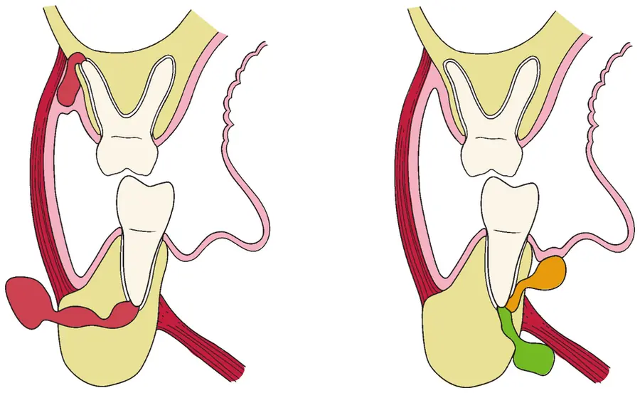

نسخه استخراجشده؛ ترجمه یا تأیید علمی انجام نشده است. وضعیت: captured
اصل چهارم مدیریت عفونت اودنتوژنیک: عفونت را با جراحی درمان کن.
با یک هشدار شروع میکنیم: یکی از شایعترین باورهای غلط دربارهی عفونتهای اودنتوژنیک، نقش آنتیبیوتیک بهعنوان روش اصلی درمان است.

جملهای که باید کلمهبهکلمه در ذهنت بماند: عفونت اودنتوژنیک یک فرایند بیماری جراحیمدیریتشونده است و آنتیبیوتیک، اگر اصلاً اندیکاسیون داشته باشد، تنها نقش کمکی دارد.
و این یک نظر نیست — شواهدش روشن است: شواهد قوی بهروشنی نشان میدهند که مدیریت جراحی بهطور معناداری بر درمان صرفاً آنتیبیوتیکی برتری دارد در بهبود پارامترهای بالینی گوناگون، شامل دمای بدن، مقادیر آزمایشگاهی، و مدت بستری در بیمارستان.
و حالا استدلال ساختاری که همهچیز را جا میاندازد — سه عامل در مدیریت عفونت اودنتوژنیک دخیلاند:
و نکتهی تعیینکننده: دو عامل نخست تنها بهصورت جراحی قابل دستیابیاند. به همین علت است که فهم نقش مرکزی مدیریت جراحی آسان میشود.
یک تعریف مهم: در این زمینه، «جراحی» تنها برش و تخلیه و کشیدن دندان مقصر نیست — بلکه همهی اشکال حذف منشأ عفونت را در بر میگیرد، مانند خارج کردن پالپ (با درمان ریشهی قطعی بعدی) و درمان پریودنتال.
و پس از تشخیص عفونت اودنتوژنیک (با شناسایی درست منشأ)، نخستین جزء مدیریت جراحی، حذف علت است — که به آن «کنترل منشأ» هم میگویند.
و روش کنترل منشأ به دو چیز بستگی دارد: علت اختصاصی (اندودانتیک یا پریودنتال)، و شدت.
و سه موقعیتی که در آنها برش و تخلیهی جراحی اندیکاسیون دارد: وقتی دسترسی اندودانتیک تخلیهی کافی فراهم نمیکند، وقتی عفونت از زائدهی آلوئولار گذشته و به فضای وستیبولار یا سایر فضاهای بافت نرم رفته، و وقتی بیمار دچار نقص ایمنی تشخیص داده میشود.